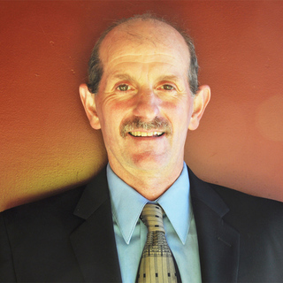

×
Brad Frost
Web Designer
Brad Frost is a web designer, speaker, writer, and consultant located in beautiful Pittsburgh, PA. He is the author of the book Atomic Design, which introduces a methodology to create and maintain effective design systems. In addition to co-hosting the Style Guides Podcast, he has also helped create several tools and resources for web designers, including Pattern Lab, Styleguides.io, Style Guide Guide, and This Is Responsive.
×
Cal Henderson
Slack
CTO and Co-Founder
Cal Henderson is the co-founder and CTO of Slack. He is an experienced technology leader, having previously built and led the engineering team at Flickr, through its acquisition by Yahoo. As a popular speaker on engineering scalability, he authored the best-selling OíReilly Media book ìBuilding Scalable Websitesî. He was a pioneer in the use of web APIs, and created the basis for oAuth and oEmbed, now used by YouTube, Twitter, and many others. Cal has a Bachelor of Computer Science from the University of Central England, and was involved in Londonís early online community through his work with the early digital community B3ta and his personal blog iamcal.com, which he has run for over 15 years. Cal now resides in San Francisco.
×
Dana White
Bright Ideas
Dana White is an entrepreneur, passionate developer, father and mentor. Throughout his career, Dana has contributed to development teams ranging from early stage startups to government to Big Media. His passion for growth and to be at the bleeding edge of technology has caused him to be an infinite learner. In addition to building software, Dana has developed a passion to teach what he learns. He is currently an active contributor to Egghead.io
×
Dave Alpert
CEO and Co-founder
Geopogo
Dave Alpert, CEO and Co-founder of Geopogo, is an award-winning building architect who is bringing his visionary approach to the world of 3D virtual spaces. Dave holds an MBA and the professional honor of being elevated to Fellowship in the American Institute of Architects. Having lived and worked in five countries and traveled around the world, he has developed a great appreciation for quality and diversity in spatial design. Michael Hoppe, Creative Director of Geopogo, bridges the worlds of architectural design and emerging 3D design technology. Michael's dynamic energy and talent has made him a driving force in the development of the new software platform that changes the 3D design process and advances the application of 3D technology to industry verticals from e-commerce and entertainment to real estate and tourism. Andy Kang, Lead Software Engineer of Geopogo, combines his UC Berkeley education in cognitive science and computer science to reinvent 3D design as a fully intuitive user experience. For both the creators of 3D designs and the users of the spaces that they create, he is making the world of 3D design open and welcoming to everyone.
×
EG Nadhan
Chief Technology Strategist
Red Hat
E.G.Nadhan is Chief Technology Strategist for the Central Region at Red Hat. He provides thought leadership on various concepts including Cloud, Big Data, Analytics and the Internet of Things (IoT) through multiple channels including industry conferences, Executive Round tables as well as customer specific Executive Briefing sessions. With 25+ years of experience in the IT industry selling, delivering and managing enterprise solutions for global corporations, he works with the executive leadership of enterprises to innovatively drive Digital Transformation with a healthy blend of emerging solutions and a DevOps mindset.
×
Elishia Dvorak
Technical Marketing Manager
Adobe
Elishia Dvorak is the Technical Marketing Manager at Adobe supporting both eLearning and ColdFusion product lines. In that role she provides sales & marketing support, technical guidance, education & training for those products and integrated technologies. She has a long history of assisting customers with server support, consulting and training with over 10 years performing enterprise dedicated support and Technical Account Management for the largest Adobe customer architectures. Prior to her current role, she spent time as an Adobe Reseller and Solution Provider specializing in server side solutions.
×
Harry Roberts
Consultant
Harry is an award-winning Consultant Performance Engineer from the UK. With a client list ranging from the United Nations to Google, the BBC to the Financial Times, he has helped some of the worldís largest organisations make their websites faster. He also holds positions as a Google Developer Expert, where he shares web performance research and findings, and as Performance Ambassador for SHIFT Commerce, where he aims to make ecommerce faster from the inside out. He writes about all things front-end performance at csswizardry.com, speaks at tech events all across the globe, and regularly shares his insights at @csswizardry.
×
Jeff Beck
Software Architect
SmartThings
Jeff is focused on the cloud aspects of the open IoT platform that is SmartThings. He has designed and built globally distributed micro-services that support user routing and authentication systems. Jeff worked deeply with Samsung teams in a role where he helped design and lead engineering efforts across multiple sites at once. Jeff has also worked deeply with SpringSecurity OAuth and JWT, creating a globally distributed OAuth auth server.
×
Leemay Nassery
Web Designer
Comcast
Leemay leads the Recommendations and Targeting engineering efforts at Comcast, and sets the strategic direction for Content Personalization for Comcast's Xfinity consumer facing video products. Leemay has been instrumental in driving a culture shift at Comcast to make data driven decision making a core tenet, by leading the charge with A/B testing, Testing and Targeting, and producing the metrics to measure successful customer outcomes.
×
Marie Leaf
Head of Public Product
Kadena
As Head of Public Product, Marie Leaf bridges the divide between private and public blockchain development at Kadena. Marieís experience has enabled her to provide solutions to diversify and adopt blockchain to influence the way businesses run. Her insights continue to enhance Kadenaís blockchain technology to provide the highest assurance, confidentiality, and performance in the industry. Prior to Kadena, Marie has vetted leading enterprise platforms for the Chief Architect of Cognizantís blockchain practice and during the past three years and grew her own independent consulting practice as a dedicated member of the public blockchain community. She received her B.A. in Developmental Economics and Political Science at McGill University.
×
Matt Layman
Storybird
Matt Layman is the Lead Software developer at Storybird, an online platform which inspires kids to write and discover a love for creating with words. Over his career, Mattís experience spans from web development to real-time satellite software development. He is a proponent of Python, a language heís been using for over 10 years, and organizes Python Frederick in Frederick, MD. Recently, Matt started a new project with the goal of helping and educating developers about health topics at Full Health Developer. Outside of code, Matt is a husband and father of two and loves nothing more than the glee on his childrenís faces as they fire off model rockets or build multi-colored castles out of LEGO.
×
LinkedIn
Melanie Sumner
Software Engineer
Melanie is a decorated, disabled military veteran who became a software engineer after her enlistment ended. She now works as a Senior Software Engineer at LinkedIn with a specific focus on accessibility in Ember. As a member of the Ember.js core team, she is working on ways to make accessible applications easier to implement, and the importance of this work easier to understand.
×
Michael Albers
VP Product Management
Oath Inc
Michael Albers is VP of Product at Oath, leading Partner, Horizontal, and Communication Products. He manages product execution, strategy, and integrations for Oathís suite of communication products, such as Yahoo & AOL mail partnership product integrations, and coordinates horizontally across the Oath verticals ó News, Finance, Sports, Entertainment and Communications. Michael has more than 20 years of experience working in consumer technology, platform, and internet companies of all sizes. For the last five years, he has led communication products at Oath, including email, messaging, groups, and calendar. Prior to Oath and Yahoo, Michael worked at several startups in Silicon Valley in various spaces from financial card-linked services (CardSpring acquired by Twitter) to email utility and social graphs (Xobni acquired by Yahoo) and online workforce crowdsourcing platform (LiveOps). In addition, he has worked at several other technology companies such as Inktomi, Netscape and Mcafee.
×
Phil Nash
Developer
Twilio
Phil Nash is a developer evangelist for Twilio. Sometimes he writes code on stage in front of a crowd, praying inside that everything works. Sometimes he writes open source code, which is much less stressful because if it is wrong someone else can correct it. He blogs on this site and on the Twilio blog and youíll find plenty of code there too.
×
Rebecca Fitzbugh
Principal Technologist
Rubrik
Rebecca Fitzhugh is the Principal Technologist at Rubrik where she researches and evaluates emerging technologies to define and communicate long-term technical strategies. Prior to joining Rubrik, she freelanced as a consulting architect for 6 years. During that period, Rebecca worked with various federal agencies, foreign government, enterprise, and service provider customers across multiple verticals. She began her career in the US Marine Corps, acting as a data systems analyst. During her 5 year service, Rebecca specialized in cryptographic systems and eventually managed a Force level data center that provided services to the entire Pacific fleet.
×
Renaud Visage
Technical Co-Founder
Eventbrite
Renaud Visage is the technical architect and co-founder at Eventbrite ñ 12 years and 1000 employees later, he continues to leverage his entrepreneurial nature by driving innovative projects and initiatives at the company. In 2006, he joined forces with Kevin & Julia Hartz to found Eventbrite. He anticipated several fundamental shifts in the way we use the internet ñ including the arrival of social media, big data analysis, the shift to mobile devices as first screens and the ubiquity of APIs ñ and leveraged their disruptive power to Eventbriteís advantage, fuelling the companyís growth into the powerful global ticketing and event technology platform it is today. When Renaud is not writing code, heís mentoring and investing in startups in several European countries. Or he is taking pictures somewhere around the world.
×
Rohit Basu
Architect
PayPal
I have been at PayPal for almost 3 years now. I am the Architect of the Merchant Integrations Platform, which owns the Dev Portal, Webhooks Platform, Sandbox Environment & the SDK generator. I worked on re-architecting the On-boarding platform before joining my current team.Before joining PayPal I worked at WalmartLabs & Amazon. I love experimenting with new technology, building POCs, writing `Hello Worlds` and sharing the knowledge with others. Application programming & Distributed systems is what I love and live for.
×
Ryan King
Digital Experience Designer
The Smithsonian Freer Gallery of Art
Ryan King is the Digital Experience Designer at the Smithsonianís Freer Gallery of Art and Arthur M. Sackler Gallery. An open source evangelist, he joined the Smithsonian as a graduate of the Corcoran College of Art + Designís Exhibition Design M.A. program with a vision of fusing technology with the built museum environment. Ryan grew up in Gainesville, Florida and fell in love with the museum world working in the education department at the Harn Museum of Art during his undergraduate studies at the University of Florida. He was a Windgate Curatorial Fellow at the Museum of Contemporary Craft in Portland, Oregon, a fellow in the Getty NextGen Leadership Institute, and served as social media consultant at the Smithsonian National Museum of African Art before joining the Freer|Sackler. In addition to his daily coding and design work, Ryan is Co-Chair of the Smithsonian GLOBE (LGBTQ) Employee Group and serves as the Smithsonian Wellness liaison for his unit.
×
Sarah Drasner
Sr. Cloud Developer
Microsoft
Sarah is an award-winning Speaker, Sr Cloud Developer Advocate at Microsoft, and Staff Writer at CSS-Tricks. Sarah is also the co-founder of Web Animation Workshops, with Val Head. Sheís the author of SVG Animations from OíReilly and has given Front-end Masters workshops on Vue.js and Advanced SVG Animations. Sarah is formerly Manager of UX Design & Engineering at Trulia (Zillow). Sarah won CSS Dev Confís ìBest of the Best Awardî as well as ìBest Code Wranglerî from CSS Design Awards.
×
Sarah Squire
Senior Technical Architect
Ping Identity
Sarah Squire is a Senior Technical Architect at Ping Identity. She is a co-author of NIST Special Publication 800-63C Digital Identity Guidelines, which outlines federated authentication standards for all US federal agencies. She serves on the Board of Directors for IDPro and the OpenID Foundation. She has been named one of the top 100 influencers in identity. Sarah holds a Bachelor of Science in Physics and a Master of Science in Information Management from the University of Washington where she was a NASA Space Grant Scholar. She is also a Certified Information Security System Professional (CISSP).
×
Tricia Katz
Outdoor Voices
Tricia Katz is a Senior Software Engineer at Outdoor Voices working on web, mobile, and emerging applications. As a technologist, she believes in building applications that have a positive impact, make our life more simple, and enjoyable. In her pursuits to do so, Tricia has experimented with emerging technologies, including chatbots and augmented reality, and is the developer behind the OV Trail Shop, Outdoor Voicesí newly launched AR shopping experience. Tricia is an active member of the Austin technology community and runs several organizations around her passions for exploring new and innovative technologies, including VR Beyond Gaming, VR Cafe, and CodePen Austin. She is dedicated to diversity and inclusivity in the tech community and has played a leadership role with Country Girls Can Code, Women Who Code, and The Ann Richards School Foundation.